あとは、分からない画面が出たときに開いてください。
1ホーム画面に置く
トップページを開きます。iPhone なら共有ボタンを押して「ホーム画面に追加」を選びます。
アプリと同じように、一回で開けるようになります。毎朝見るなら、これが一番早いです。
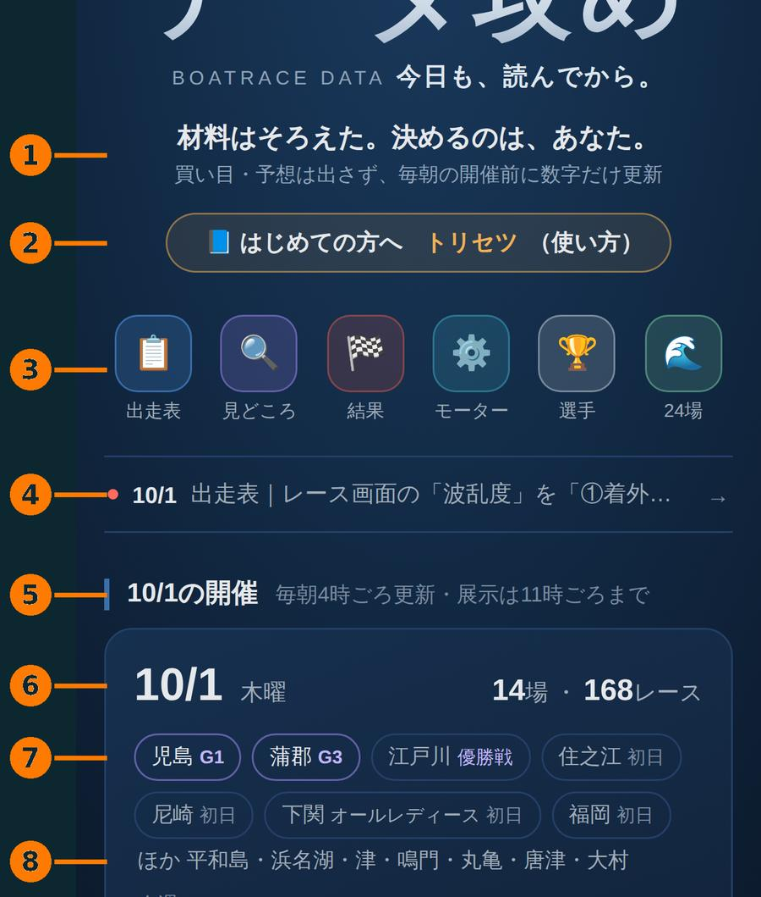
- このサイトの立場材料はそろえた。決めるのは、あなた。買い目と予想は出しません。
- トリセツの入口このページです。迷ったらここへ戻れます。
- よく使う6ページ出走表・見どころ・結果・モーター・選手・24場。ここから一回で飛べます。
- 更新のお知らせ今日、何を変えたか。押すと詳しく出ます。
- 今日の開催次で説明します。
- 日付と数今日は何場で何レースあるか。
- 場の札大きな大会（G1・G3）や、優勝戦・初日がひと目で分かります。
- 残りの場「ほか」に続けて名前が並びます。
2トップで今日の開催を見る
トップを開くだけで、今日どこでレースがあるか分かります。毎朝4時ごろに新しくなります。
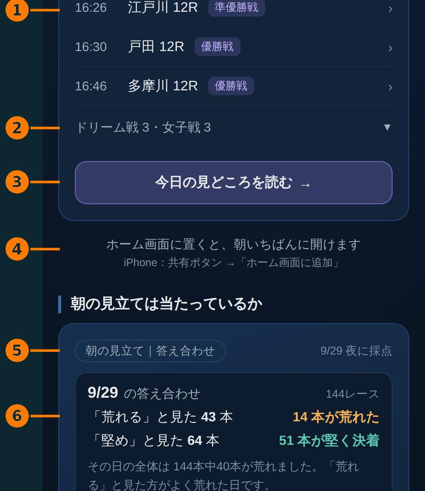
- 今日の山場優勝戦・準優勝戦などを、締切の早い順に出します。押すとそのレースへ行けます。
- ドリーム戦・女子戦押すと一覧が開きます。
- 今日の見どころを読む見どころのページへ行きます。
- ホーム画面に置く案内これです。
- 朝の見立ては当たっているか次で説明します。
- 前の日の答え合わせ昨日の結果です。
今週の SG・G1 も、この欄にまとめて出ます。
3答え合わせの帯を読む
このサイトは毎朝、その日の全部のレースを3つに分けます。「荒れる」「混戦」「堅め」の3つです。
分け方は機械が決めます。管理人の予想ではありません。
そして夜、実際の結果と比べます。当たった割合をトップに出しています。
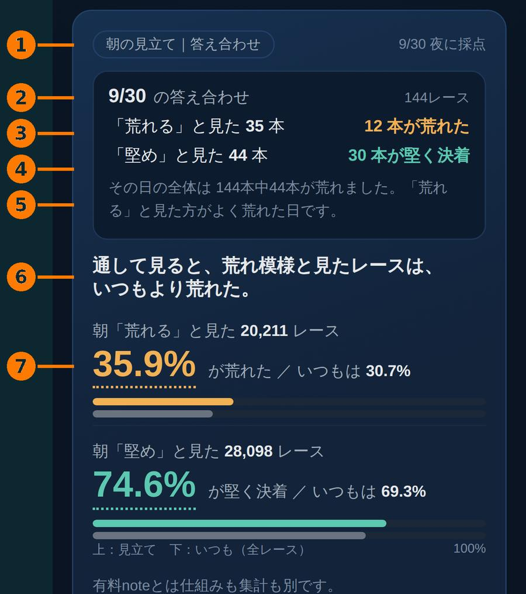
- いつ採点したか前の日の夜に採点しています。
- 前の日の結果その日の全レース数。
- 「荒れる」と見た本数と、実際に荒れた本数
- 「堅め」と見た本数と、実際に堅く決まった本数
- その日ぜんたい分けていないレースも入れた数です。見立てと比べられます。
- 通して見た結果始めてからの全部です。
- 2つの数字上が見立てたレース、下が全レース。上が下より大きければ、見立てが効いています。
3つの言葉の意味
- 荒れる3連単の払戻が5,000円以上になること
- 堅め3連単の払戻が5,000円より安いこと
- 混戦どちらとも言っていないレース。答え合わせには入りません
その数字も消さずに出しています。「数え方を見る」を押すと、分母まで全部出ます。
分け方は 2026年9月30日から新しくなりました。前の分け方で判定したものも、結果が出たあとに直すことはしていません。
4自分の場と好きな選手を登録する
場を登録する
「24場のトリセツ」を開いて、よく行く場のピンの印を押します。
登録すると、出走表・モーター・見どころで、その場が一番上に出ます。毎朝さがす手間がなくなります。
好きな選手を登録する
出走表か選手図鑑を開きます。選手の名前の横に☆があります。押すと⭐に変わります。これで登録できました。
登録すると、見どころでその選手が出るレースだけを選べます。
場も選手も、登録した情報はあなたのスマホの中だけに残ります。外には送りません。
51日の見る順番
この順に見れば足ります。
前の日の夜
- 見どころを開いて「明日」を押す
明日どのレースが荒れそうか、条件が出ています。夜になるほど数が増えます。
当日の朝
- トップ今日どこでやっているか、山場はどれか。
- 出走表場を選んで、レースの6人を見ます。
- 見どころで「当日」を押す ── 荒れそうなレースが締切の早い順に並びます。
レースの前
- 出走表のレース画面荒れ具合・イン1着率・風・潮が1つの画面に出ます。
- 24場のトリセツその場の水質と風のクセを見ます。
レースのあと
- レース結果着順・決まり手・払戻・そのときの水面が出ます。
- 万舟のツボその場がどのくらい荒れるかが出ます。
時間があるとき
- 検証よく言われる話を、実際に数えた読み物です。いま8本あります。
- 24場のトリセツの「観戦スポット」 ── その場に行くときに読みます。
- 選手図鑑 ／ 用語辞典 ／ 場の文化 ／ 実況アナ図鑑 ／ 選手占い
ここから引いてください。
記号の見本
出走表と見どころで出てくる記号です。これだけ覚えれば読めます。
見どころのページの上にある「このページの見方・記号」を押すと、同じ説明が画面にも出ます。
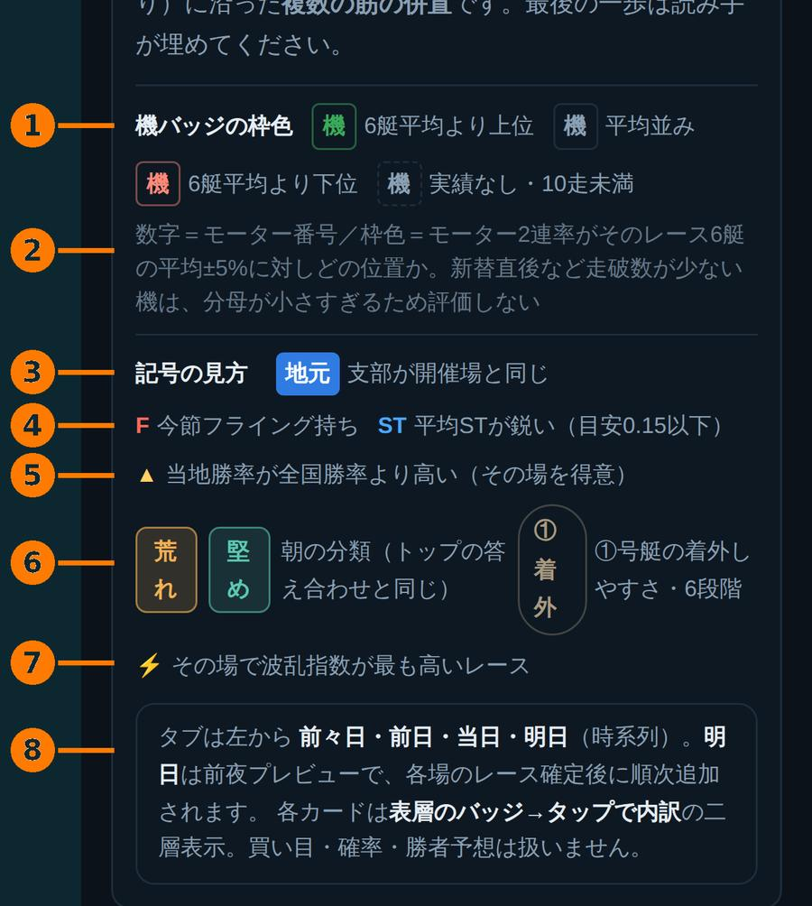
- 機の枠の色モーターの番号です。枠の色で、そのレース6艇の平均と比べた位置が分かります。
- 色を付けない場合走った数が10より少ない機は、数が足りないので色を付けません。
- 地元その選手の支部が、開催している場と同じです。
- F と STF は今節フライングを持っています。ST は平均スタートが早い人です。
- ▲その場での勝率が、全国の勝率より高い人です。その場が得意ということです。
- 荒れ・堅め朝の分類です。トップの答え合わせと同じものです。
- ①着外1号艇が着外になりやすい度合いを、1から6の6段階で出したものです。
- タブと二層表に印、押すと中身。この作りは全部のページで同じです。
選手に付く印
| 地元 | 支部が、開催している場と同じ |
| F | 今節フライングを持っている |
| ST | 平均スタートが早い（0.15より早い人） |
| ▲ ↑ | その場での勝率が、全国の勝率より高い |
| A1 B2 | 級別。A1・A2・B1・B2 の4つ |
出走表とモーターの札の形
出走表とモーターでは、札の形で意味を分けています。
| 最速ST | 点線の札。数字から出した判定です。最速ST・鋭いST・当地得意・機力上位・超抜など |
| 地元 | 丸い札。支部が、開催している場と同じ |
| F | 太い線の札。今期（級別審査の期間）にフライングを持っている。数字は本数 |
レースに付く印
| 荒れ | 朝に「荒れる」と分けたレース |
| 堅め | 朝に「堅め」と分けたレース |
| ①着外4 | 1号艇が着外になりやすい度合い。1から6の6段階。 数が大きいほど、1号艇が負けやすい形という意味です。 確率ではありません。7つの条件から出した目安です。 |
| ⚡ | その場で、いちばん荒れそうなレース |
| G1 | 大きな大会。SG・G1・G2・G3・マスターズなどが出る |
モーターの「機」の色
数字はモーターの番号です。枠の色が、そのレース6艇の平均と比べた位置です。
| 機 27 | 6艇の平均より上（＋5％より上） |
| 機 27 | 平均と同じくらい |
| 機 27 | 6艇の平均より下（−5％より下） |
| 機 − | 走った数が10より少ない。色を付けません |
枠の色
公式と同じ色です。全部のページで同じ色を使います。
1 2 3 4 5 6
決まり手の色
選手が1着になったときの内わけを、この4色の帯で出します。
| 逃げ | |
| 差し | |
| まくり | |
| まくり差し |
24場のトリセツで出る印
| 荒れ度 低 | 堅い。インが強い場 |
| 荒れ度 中 | ふつう |
| 荒れ度 高 | 荒れやすい場 |
| 企 | ふだんは企画レースがある場 |
おかしく見えるとき
こわれたように見えて、実は正しい表示です。
よくある質問
気になったページだけ、引いてください。
出走表毎日
1. まず場をえらぶ
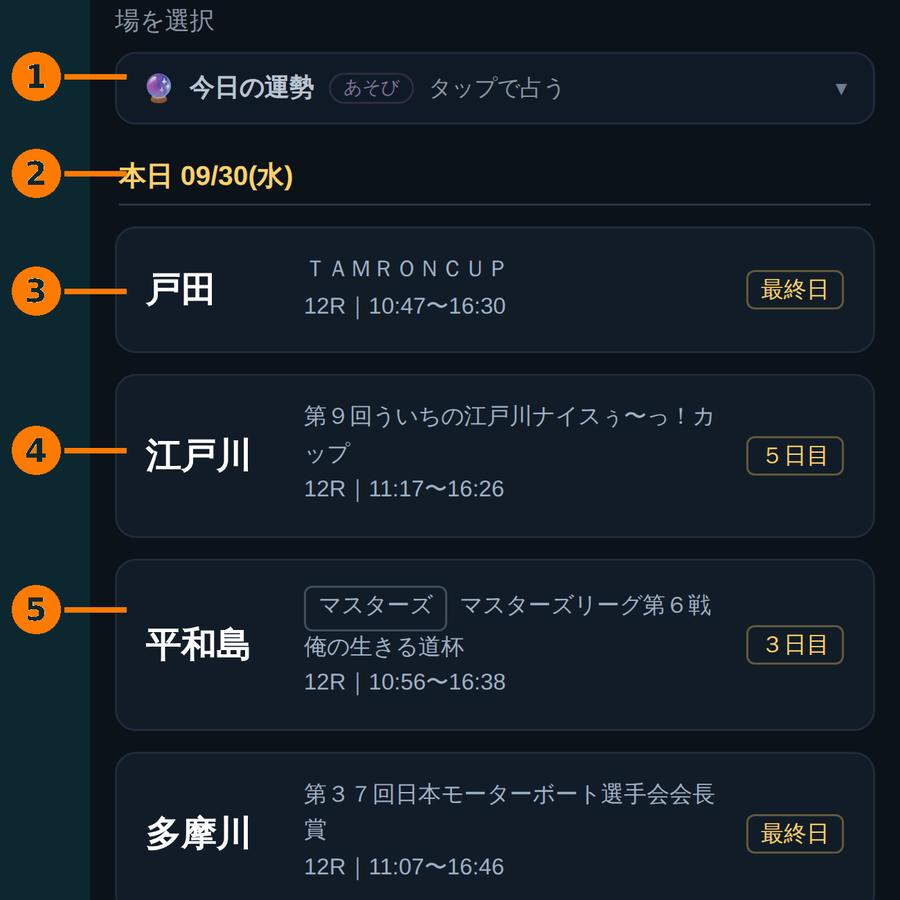
- 今日の運勢遊びです。押すと占いが出ます。
- 日付本日の分です。夜に見ると、翌日の分が下に出ます。
- 場の名前押すとレースの一覧が開きます。
- 大会の札SG・G1・G2・G3・ルーキー・マスターズ・女子。SG・G1・女子戦は、カードの左に色の帯も付きます。進入固定の場には「進入固定」の札が付きます。
- レースの数と時間「12R」はその日のレース数です。そのあとが、1Rの締切から最後のRの締切までの時間です。
- 何日目か初日・2日目・最終日など。
2. レースをえらぶ
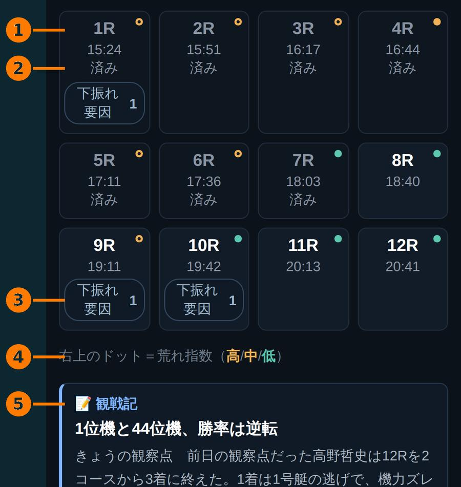
- レースのボタンRと締切の時刻。押すとそのレースが開きます。右上のドットは荒れ指数です。
- 済み締切を過ぎたレースです。
- 下振れ要因1号艇が沈みやすい条件が、いくつ当てはまったか。当てはまったレースにだけ付きます。
- ドットの見方荒れ指数の高・中・低です。
- 観戦記その場の読み物です。前の日までの確定した数字だけで書いています。
3. レースを開く
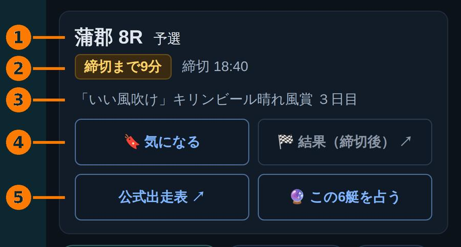
- レースの名前場・R・予選か優勝戦か。
- 締切まであと何分か。締切の15分前から黄色に変わります。締切を過ぎると「締切済み」になります。右は締切の時刻です。
- 大会の名前と何日目か
- 気になる押しておくと、あとで結果を確かめられます。
- 公式へ行くボタン公式の出走表と結果に飛びます。この6艇を占うは遊びです。
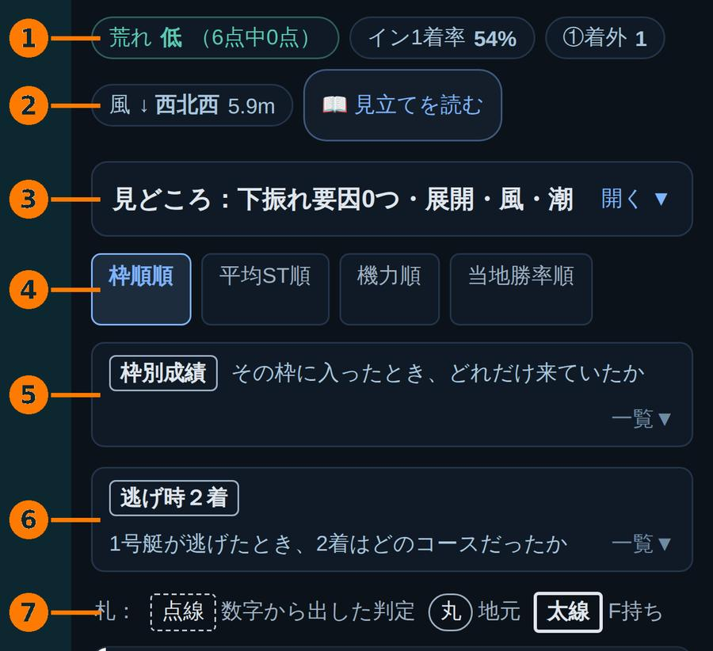
- 3つの数字荒れ／イン1着率／①着外。「荒れ」は荒れる条件の点数（6点中何点）と、その低・中・高。「イン1着率」はその場の1コースの1着率。「①着外」は1号艇が着外になりやすい度合いで、1から6の6段階です。見どころの「①着外」と同じ値です。企画レースや優勝戦などのときは、その札もここに並びます。
- 風と、見立てを読む締切の時刻の風の向きと強さです（予報）。「見立てを読む」を押すと、見どころのその場のところへ飛びます。
- 見どころ押すと開きます。①の下振れ要因・展開の見どころ・締切時刻の風予報・当日の潮が、ここにまとめて入っています。展開の見どころは、数字を添えて書きます。買い目ではありません。荒れに点があるレースでは、この上に「荒れサイン」の枠も出て、当てはまった条件が並びます。
- 並び替え枠順・平均ST・機力・当地勝率の4つ。同じ6人を別の順で見ると、印象が変わります。
- 枠別成績その枠に入ったとき、どれだけ来ていたか。押すと一覧が出ます。
- 逃げ時2着1号艇が逃げたとき、2着はどのコースだったか。
- 札の見本下の6艇に付く札の形の意味です。点線は数字から出した判定、丸は地元、太線はF持ち。
風予報は予報です。潮は事実だけを出し、荒れる予想には使いません。
4. 6艇を見る
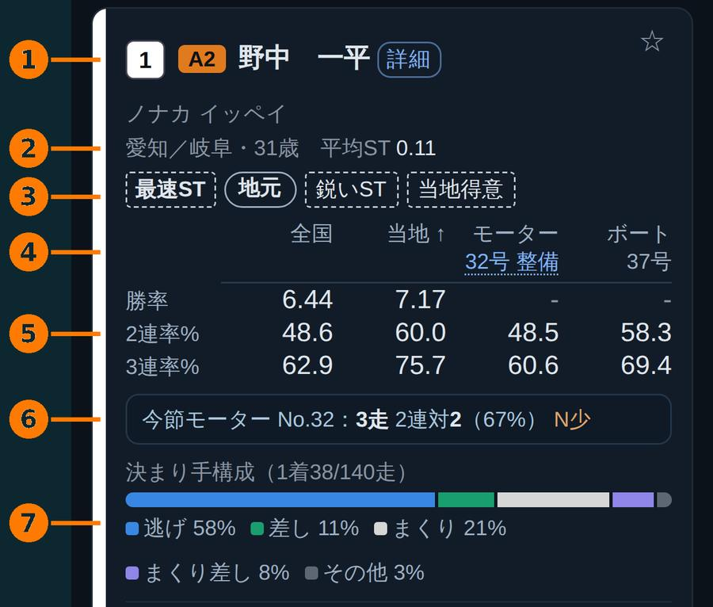
- 名前の行枠の番号／級別／名前。名前を押すと選手図鑑へ。右の☆で好きな選手に登録できます。
- 選手のこと読み方、支部と出身、年齢、平均ST。異名がある選手は、その行も出ます。
- 札最速ST・地元・鋭いST・当地得意・機力上位など。当てはまったものだけ出ます。形の意味は上の見本のとおりです。
- 表の見出し全国／当地／モーター／ボート。当地の横の「↑」は、その場の勝率が全国より高いという印です。モーターの番号の横の「整備」を押すと、その機の整備の記録に飛べます。
- 表の数字勝率・2連率・3連率を、全国・当地・モーター・ボートで並べています。横に読むと比べられます。モーターとボートには勝率がないので「-」です。
- 今節モーター今節ここまで、何回走って何回2連対したか。5走より少ないうちは「N少」が付きます。
- 決まり手構成1着になったときの内わけです。％は1着の回数が母数です。かっこの右は、同じ期間（直近183日）に走った数です。
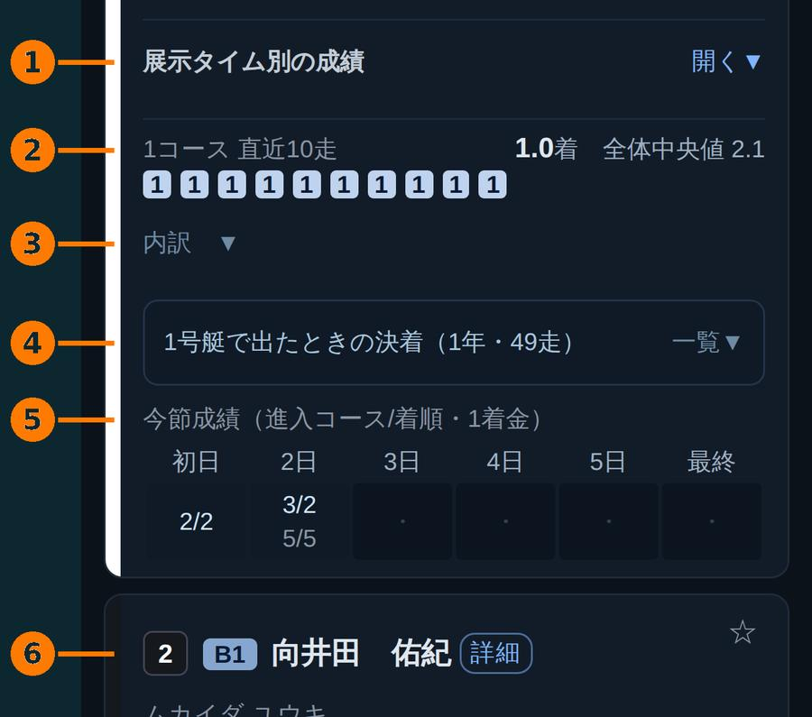
- 展示タイム別の成績押すと開きます。展示が良かった走・普通の走・悪かった走に分けて、上位に来た割合を、同じコースの平均と並べます。
- コース別の直近10走その枠のコースで、最近10回どんな着だったか。右に平均の着と、全選手の真ん中の値が出ます。
- 内訳押すともっと細かく出ます。
- 1号艇で出たときの決着1号艇のカードにだけ出ます。その選手が1号艇だったとき、どんな決まり方だったか。期間は枠別成績で選んだ期間と同じです。
- 今節成績初日から最終日まで、進入したコースと着順。1着は、淡い青の地で目立たせています。
- 次の艇同じ形で6艇ぶん続きます。
E30の場では、カードに「E30該当場」の欄が出ます。押すと、E30の場で走ったコース別の成績が開きます。
6艇の下の「このレースの自分の読み」では、締切前に「①は残る」「①は崩れる」のどちらかを記録できます。結果が出ると自動で照合されます。買い目は記録しません。記録はこの端末の中だけに残ります。
見どころ毎日
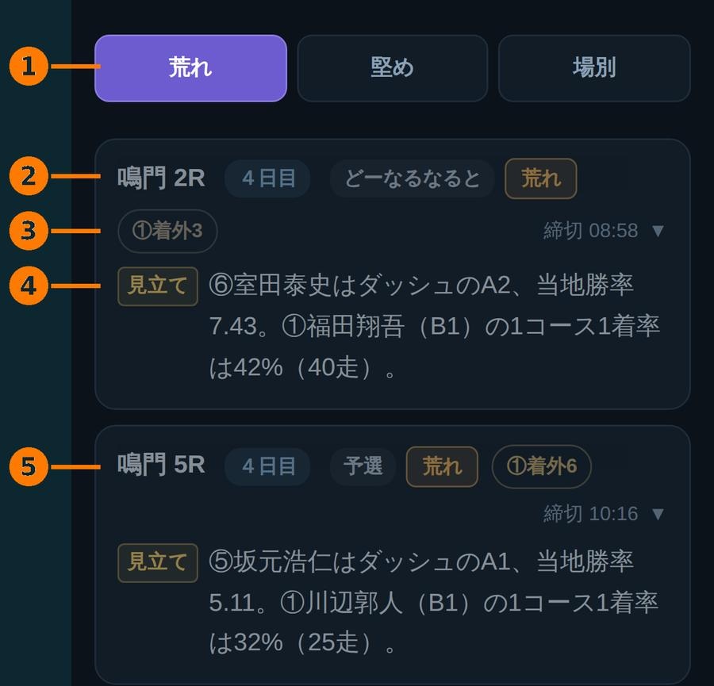
- 3つのタブ荒れ／堅め／場別。「荒れ」と「堅め」は朝の分類です。トップの答え合わせと同じものです。
- レースの行場とR／節の何日目か／予選か一般か／朝の分類の札。
- ①着外の札1号艇が着外になりやすい度合い。1から6の6段階です。
- 締切と▼押すと、そのレースの中身が全部開きます。
- 見立て一行でまとめたものです。必ず数字と母数を付けます。「42％（40走）」のように。
カードを開くと出るもの
- そのときの水面（天候・風・波・気温・水温）。予報ではなく、実際に測った数字です。
- 6艇の一覧。全国勝率とその場の勝率。
- 展開の見どころ。逃げる人・攻める人・死角の順。
- ①の下振れ要因。当てはまったときの実際の着外率を、全体の数字と並べて出します。
- 逃げ時2着の表。
4つの日と、観戦記
- タブは左から 前々日・前日・当日・明日。明日は前の夜のうちに、決まった場から順に増えます。
- 観戦記をまとめて読むその日の全部の場の読み物が、一度に並びます。
観戦記は、前の日までの確定した数字だけで書いています。予想と買い目はありません。
モーター毎日
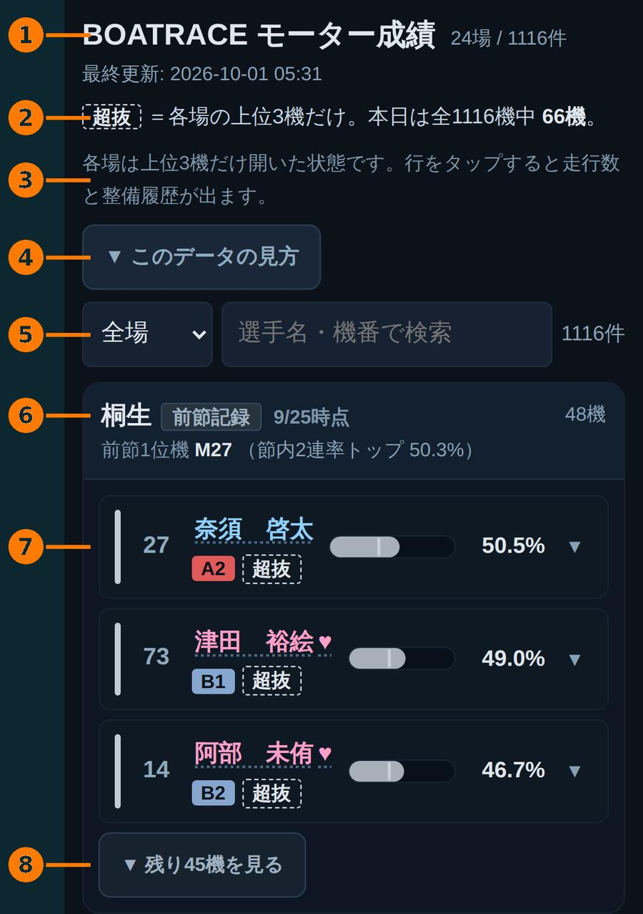
- 題名と件数24場で何機を数えているか。下は最後に新しくした時刻です。
- 超抜その場の上位3機だけに付く札です。点線の札は、数字から出した判定という意味です。全体で何機かも出します。
- 開いている数各場は上位3機だけ開いています。行を押すと、走った数と整備の記録が出ます。
- このデータの見方押すと、色・棒・走った数の決まりが出ます。
- さがす場をえらぶか、選手名か機番で調べられます。
- 場の見出し場の名前／いつの記録か／何機あるか。今日開催していない場には「前節記録」の札が付き、前の節の記録を出します。「E30」の札は、エタノールを30%混ぜた燃料を使っている場です。下の段の前節1位機は、前の節でいちばん2連率が高かった機です。
- 各機の行左の帯／機番／乗っている選手／級別／棒／2連率。帯と棒は明るいほど上位です（超抜・上位・普通・下位）。棒の目盛は全場共通なので、場をまたいで長さを比べられます。棒の上の細い縦線は、その場の真ん中の値です。選手名を押すと選手図鑑へ。
- 残り◯機を見るその場の全機を出します。
行を押すと
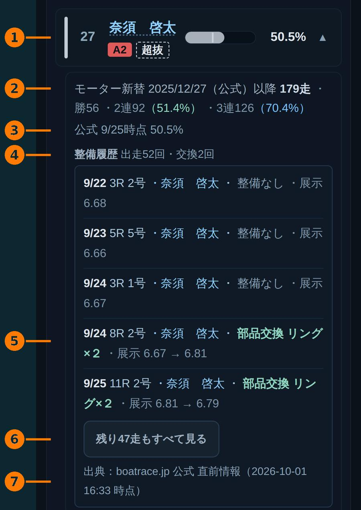
- 押した行もう一度押すと閉じます。
- 新替からの数モーターを新しくした日からの、走った数・1着・2連対・3連対。日付の横は、その日付の出どころです。
- 公式の2連率公式が出している値と、その時点。
- 整備履歴記録が取れている期間に、この機が走った回数と、部品の交換があった走の数。
- 1走ごとの記録日付・R・何号艇か・乗った選手・整備の中身・展示タイム。部品を交換した走は色が付き、交換の前と後の展示タイムが並びます。
- 残りもすべて見る古い走まで全部出します。
- 出典公式の直前情報と、取り込んだ時刻。
モーターを新しくしたばかりの場
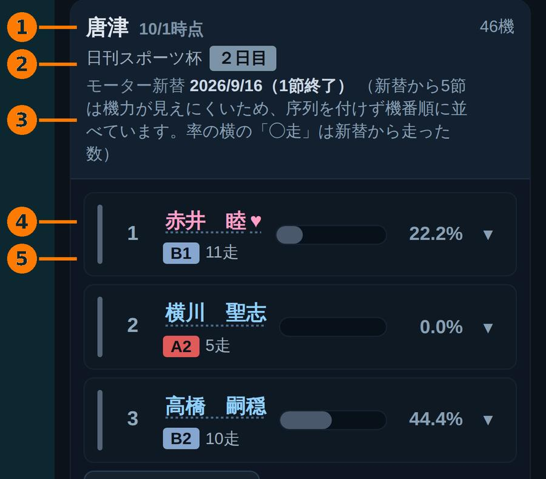
- 場の見出し場の名前と、いつの記録か。
- 大会の名前と何日目か
- 新替の注記新しくした日と、何節終わったか。新替から5節までは機力が見えにくいので、序列を付けません。
- 機番の順1号機から順に並べます。上位・下位の色分けもしません。
- ◯走新替から何回走ったか。数が少ないうちは、率が大きく振れます。
走った数は、モーターを新しくした日からの数です。新替の日付が分からなかった場は、走った数を出しません。
モーター整備3つのタブ
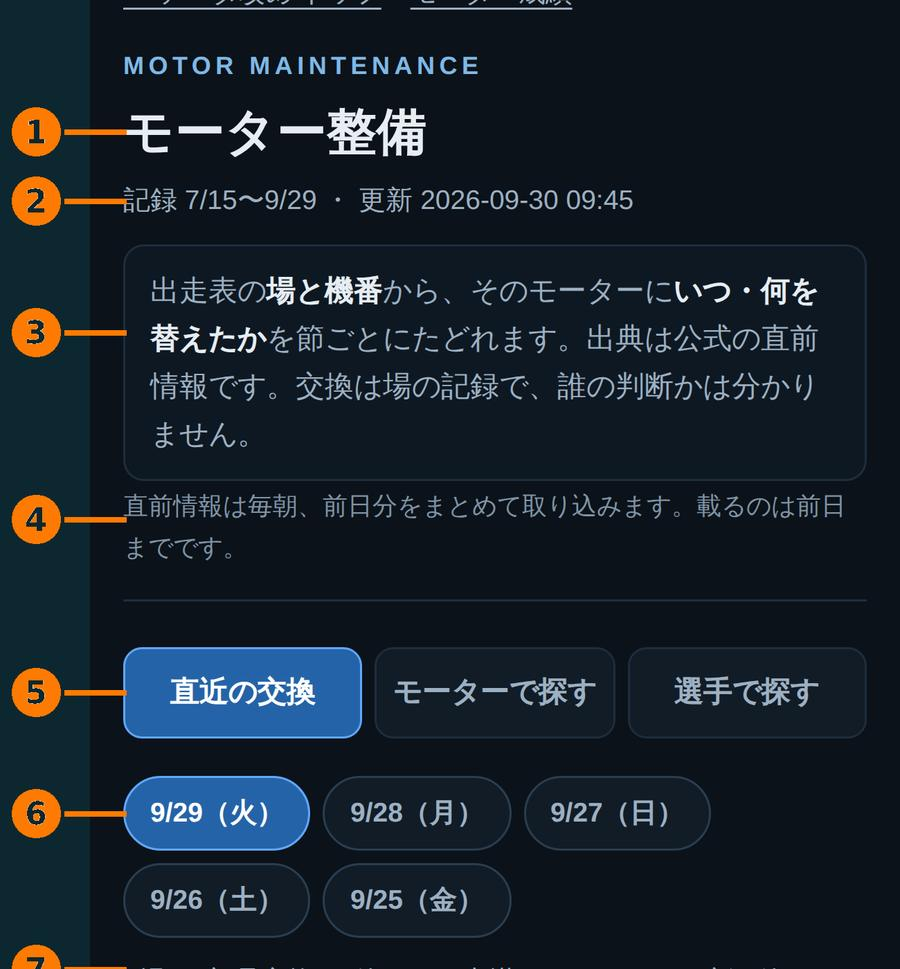
- 期間と更新いつからいつまでの記録か。
- このページの使い方出走表の場と機番から、そのモーターにいつ・何を替えたかをたどれます。
- 出どころと限界公式の直前情報です。交換は場の記録で、誰の判断かは分かりません。
- 載る範囲毎朝、前の日の分をまとめて取り込みます。載るのは前の日までです。
- 3つのタブ直近の交換／モーターで探す／選手で探す。
- 日付「直近の交換」では、日付を選べます。
- その日のまとめ何場で、部品交換が何件あったか。うち大掛かりが何件か。
言えるのは「この選手が乗った期間に、交換の記録がある」までです。
「この選手が替えた」「整備がうまい」とは読めません。だから選手のランキングは作りません。
「大掛かり」はピストンやシリンダを含むものです。この分け方はデータから機械で決めたもので、公式の分け方ではありません。
24場のトリセツ
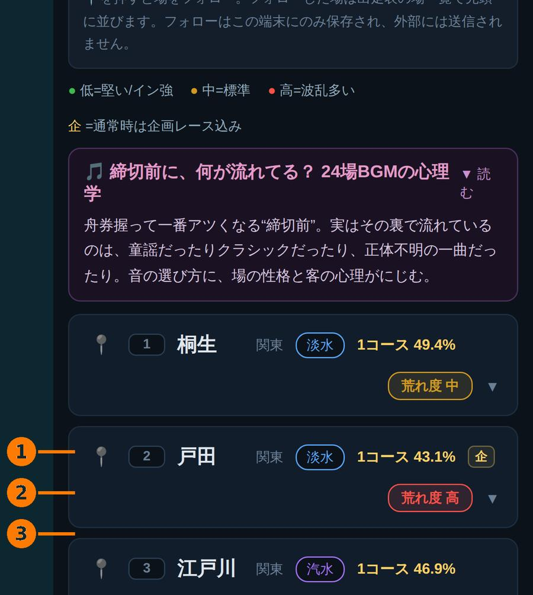
- 場の行番号／名前／地方／水質（淡水・海水・汽水）／その場のイン1着率。
- 荒れ度低・中・高の3つ。低は堅い、高は荒れやすい。
- 企ふだんは企画レースがある場です。ピンの印を押すとフォローできます。
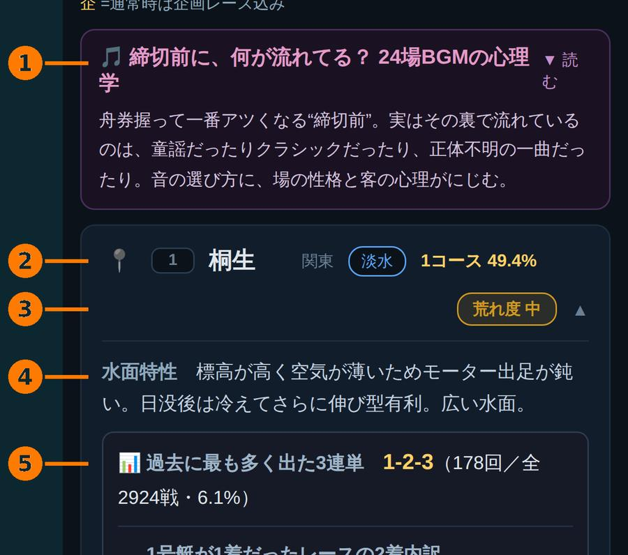
- BGMの読み物24場の締切曲を集めた読み物です。押すと開きます。
- 場の見出し押すと開いたり閉じたりします。
- 荒れ度
- 水面特性その場の形と風の特徴です。
- 過去に最も多く出た3連単組み合わせと、出た回数・全レース数・割合。母数を必ず付けます。
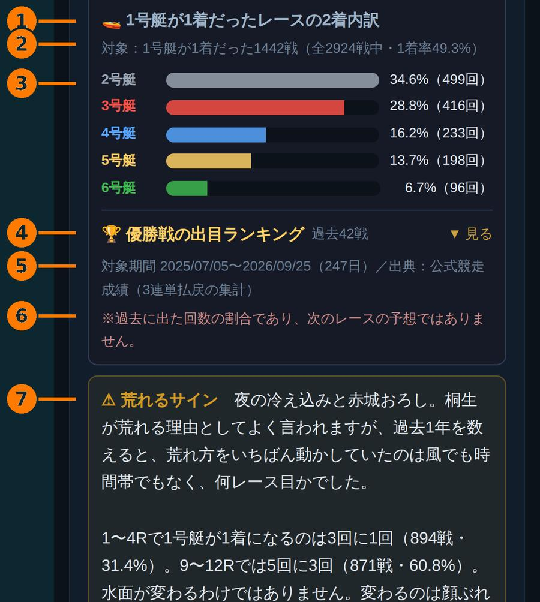
- 1号艇が1着だったレースの2着内訳
- 対象何戦を数えたか。1着率も出します。
- 2号艇から6号艇までそれぞれの割合と回数。
- 優勝戦の出目ランキング優勝戦だけを集めたものです。
- 対象期間と出どころ
- 断り書き過去に出た回数の割合であり、次のレースの予想ではありません。
- 荒れるサイン次で説明します。
荒れるサインは「言われている話」を数えたもの
よく言われる話を、実際に数えた結果が出ます。数えた結果が言い伝えとちがうときも、そのまま出します。
たとえば桐生では、こう書いてあります。
- よく言われる話 ──「夜の冷え込みと赤城おろしで荒れる」
- 数えた結果 ──「荒れ方をいちばん動かしていたのは、風でも時間帯でもなく、何レース目かでした」
- 数字 ──「1〜4Rで1号艇が1着になるのは3回に1回（894戦・31.4％）。9〜12Rでは5回に3回（871戦・60.8％）」
長い文は「続きを読む」で開きます。全部読まなくても、最初の数行で結論が分かります。
観戦スポット
24場すべてにあります。その場に実際に行くときの読み物です。
- その場でいちばん面白い一点
- どこから見るといいか
- 行く前に知っておくこと（席の買い方など）
- 最後に、その場の実績の数字
そのほか、このページで見られるもの
- 風の向き（向かい風・追い風・横風の意味と、風速の目安）
- SG と G1 のときに何が変わるか
- 場めぐり（食べもの）／実況アナ／締切のBGM／場内の予想屋
登録はこの端末にだけ残ります。外には送りません。
選手図鑑期ごと
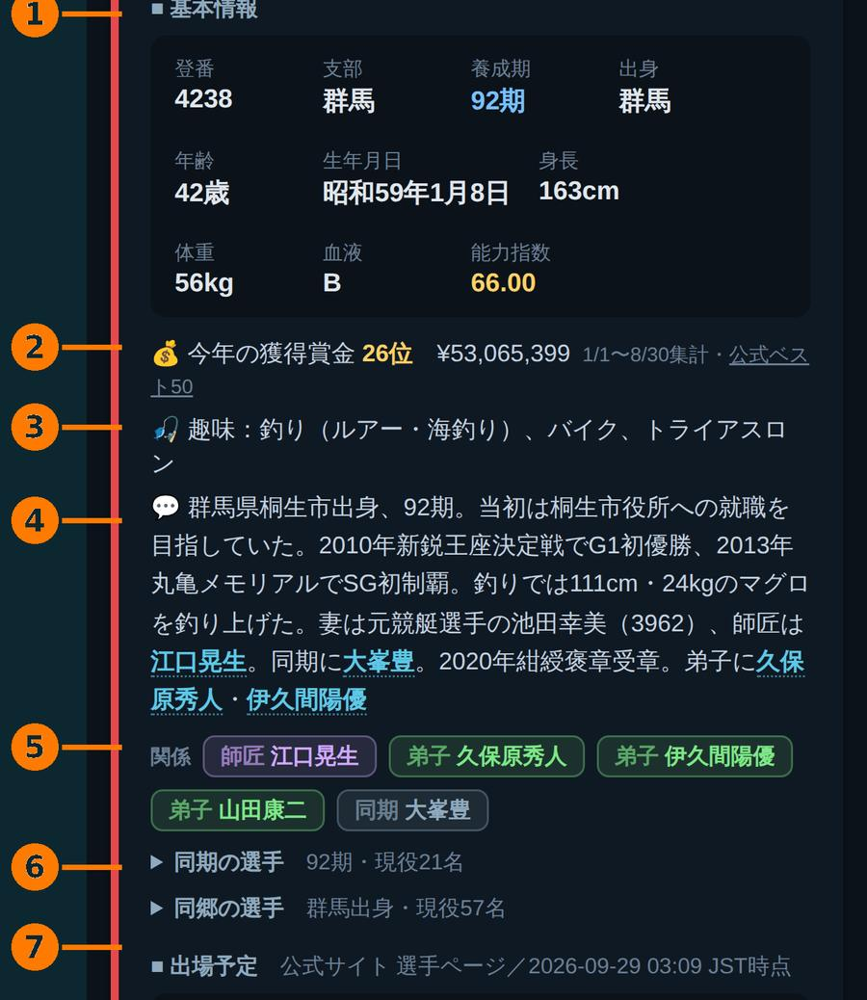
- 基本情報登番・支部・養成期・出身・年齢・生年月日・身長・体重・血液・能力指数。
- 今年の獲得賞金順位と金額。公式のベスト50へも行けます。
- 趣味
- プロフィール経歴です。師匠や弟子の名前は押すとその選手に飛べます。
- 関係師匠・弟子・同期が札になって並びます。
- 同期と同郷同じ期・同じ出身の選手が何人いるか。押すと一覧が出ます。
- 出場予定次で説明します。
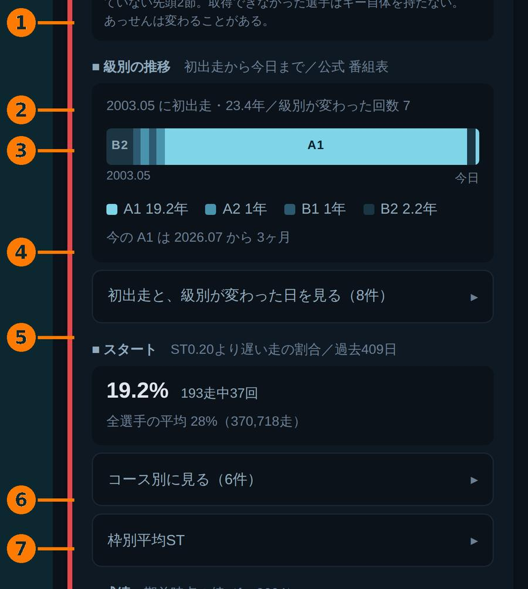
- 出場予定これから走る予定です。日付・場・大会の名前・グレード。
- 断り書き公式に載っている先の2節だけです。あっせんは変わることがあります。
- 級別の推移初めて走った日から今日までの級別を、帯にしたものです。
- 帯の読み方初出走の日・何年たったか・級別が変わった回数。
- 色ごとの年数A1 が何年、B1 が何年。いまの級がいつからかも出ます。
- 変わった日を見る押すと、いつ級が変わったかの一覧が出ます。
- スタートST 0.20 より遅い走の割合。全選手の平均も横に出ます。
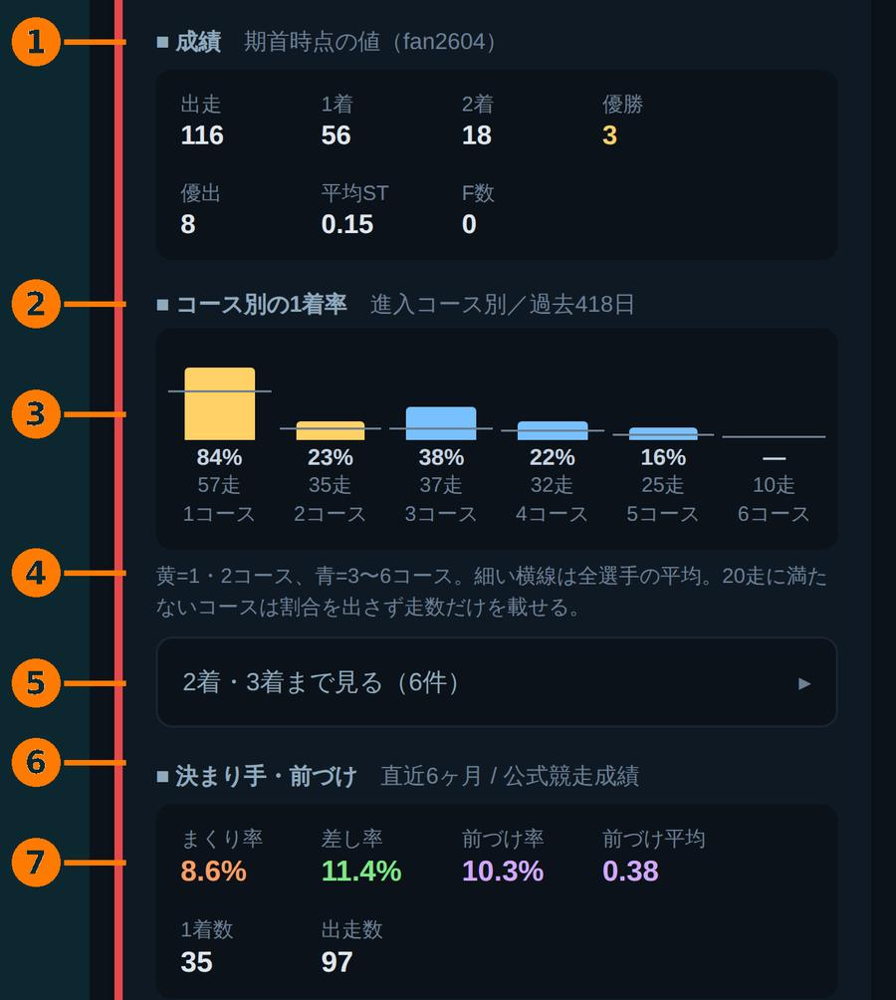
- 成績出走・1着・2着・優勝・優出・平均ST・F数。期のはじめに決まった数字です。期の途中では変わりません。
- コース別の1着率実際に進入したコースごとの1着率です。過去418日ぶんを数えています。
- 棒グラフ黄はイン（1・2コース）、青はアウト（3〜6コース）。細い横線が全選手の平均です。
- 20走に満たないコース割合を出さず、走った数だけを出します。
- 2着・3着まで見る押すともっと細かく出ます。
- 決まり手・前づけまくり率・差し率・前づけ率・前づけ平均。直近6ヶ月です。
- 母数1着数と出走数。率だけを出すことはしません。
そのほか
- 一覧／まくり屋／差し屋／支部傾向 の4つに切り替えできます
- 級別・支部・並び順で絞り込めます（イン1着率順・ST順もあります）
- 月別の成績と、E30 の場での成績
レース結果毎日
開催日を選んで、場を押すとレースが並びます。直近30日ぶんが見られます。
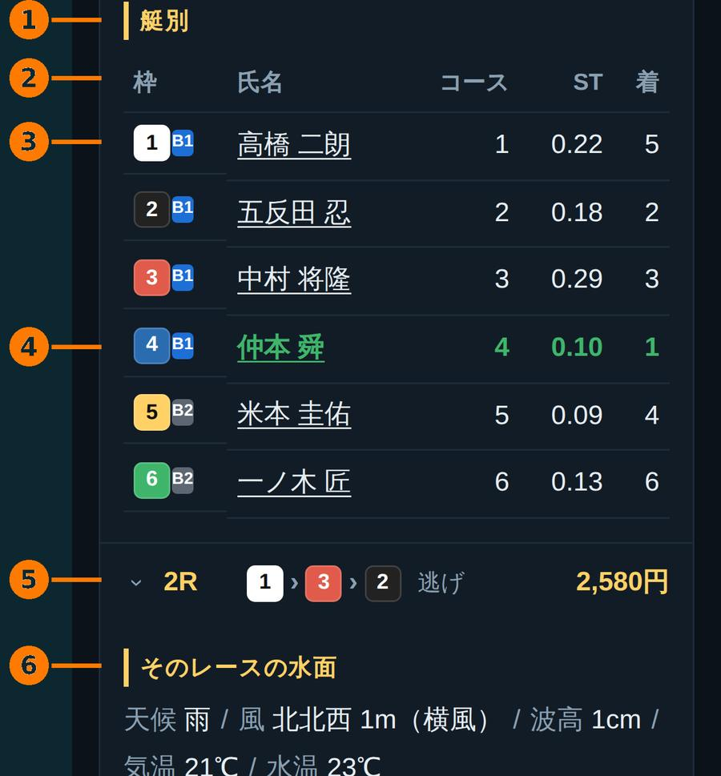
- 艇別6艇ぶんの記録です。
- 列の意味枠／氏名／コース／ST／着。
- 枠とコース枠はくじで決まった艇の番号、コースは実際に走った位置です。前づけがあると数字がちがいます。名前を押すとその選手の数字が開きます。
- 1着の行緑で目立つようになっています。
- 次のレース着順・決まり手・3連単の配当が並びます。高い配当は色が変わります。
- そのレースの水面天候・風・波・気温・水温。風は「横風」「向かい風」「追い風」まで書きます。
この例では、5号艇の ST が 0.09 でいちばん早いのに4着でした。1着は 0.10 の4号艇です。コースと展開のほうが効きます。
払戻は7つの賭け方を全部出します。締切の前の単勝オッズも一緒に出るので、人気だった艇がどれかが分かります。
出どころは、公開されているデータを集めたものです。公式の発表は boatrace.jp で確かめてください。
万舟のツボ毎日
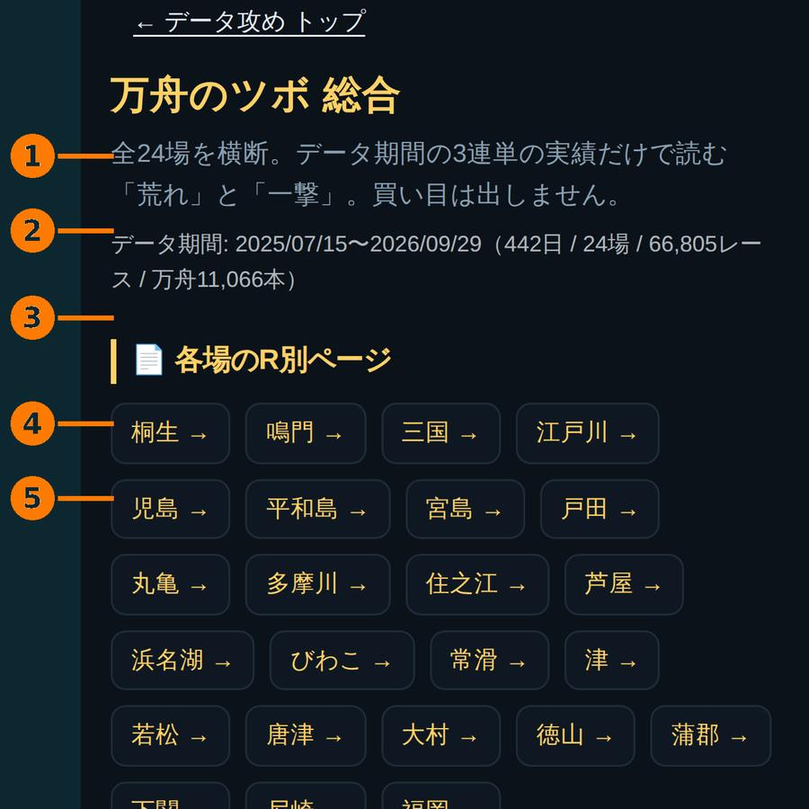
- このページの立場3連単の実績だけで見ます。買い目は出しません。
- 2つの軸「荒れ」（どのくらいの回数か）と「一撃」（どのくらい大きいか）を分けて見ます。
- 期間と数何日・何場・何レース・万舟が何本か。分母を先に出します。
- 各場のページ24場それぞれの細かいページに行けます。
- 並び順荒れやすい順です。左上ほど荒れます。
総合ページで見られるもの
- 場ごとの荒れ率3連単が1万円をこえたレースの割合。荒れる回数の多さです。
- 場ごとの最高配当一撃の大きさです。
- 高配当のレース実際に出た配当と、その日付とR。
各場のページで見られるもの
- 万舟が出やすい時間帯 上位3つ
- いちばん堅いRと、いちばん荒れるR。それぞれの万舟率と平均の配当
- 荒れたとき、どの枠が1着になったかの内わけ
- 1Rから12Rまでの万舟率
24場の差は5ポイントほどしかありません。
万舟＝3連単が10,000円をこえたレースです。
検証8本
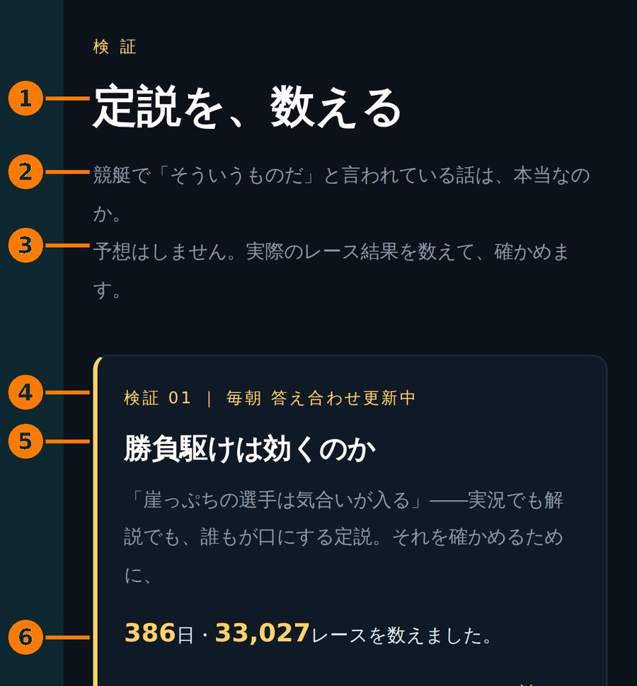
- やることよく言われる話を、実際のレース結果で数えます。
- 約束予想はしません。数えて確かめるだけです。
- 番号と状態「毎朝 答え合わせ更新中」の記事は、公開したあとも新しい結果を足して数え続けます。「集計期間 固定」の記事は、決めた期間で数えたものです。
- 題名確かめたい話そのものです。
- 言われている話その定説を、そのまま書きます。
- 数えた数「386日・33,027レースを数えました」。母数が先に出ます。
いまある8本
- 01 勝負駆けは効くのか 崖っぷちの選手は気合いが入る、を数えました
- 02 体重を絞ると走るのか 節の中で体重は本当に動いているのか
- 03 F持ちのインは遅れるのか 同じ選手のFの前と後を比べました
- 04 1番人気はどれだけ来るのか 3連単の1番人気がそのまま入ったレース
- 05 流れはあるのか 前のレースが次に何かを残すのか
- 06 地元は強いのか 地元が効くのは、どの舟か
- 07 冬はインが強いのか 冬と夏を同じ条件にそろえて比べました
- 08 4カドに実力者がいると荒れるのか 4コースの級別で分けて数えました
更新のしかた
- 記事が増えるのは不定期です。だいたい週に1本くらいです。
- 毎日のデータで答え合わせができる記事は、毎朝新しくなります。
「効かなかった」という結果も、そのまま出します。
数字には、母数と期間を必ず付けます。
場の文化 ／ 占い ／ 実況アナ
場の文化
数字ではないほうのページです。
- 締切のBGM24場の締切曲です。「曲名がわからない」「公式に書いてある」まで分けて出します。公式の音がある場はリンクを付けています。
- 場内の予想屋場立ちがあるか。公式に書いてあるか。予想紙か。分けて出します。
- 実況アナ
- E30 という燃料に切り替えた日
選手占い
遊びのページです。生まれた日と血液型を入れると、選手との相性と今日の運が出ます。
- 相性は変わりません。今日の運は毎朝変わります
- 男子／女子／全員／好きな選手 で絞り込めます
- 出走表や見どころの「この6艇を占う」から来ると、その6人だけ出ます
入れた情報は、あなたのスマホの中だけに残ります。
実況アナ図鑑
全国24場の実況アナウンサーです。名物の実況から探せます。場の順と名前の順で並べかえられます。
実況は交代することがあります。当サイトで調べたものなので、ここに無い担当の回もあります。
用語辞典 ／ 更新履歴
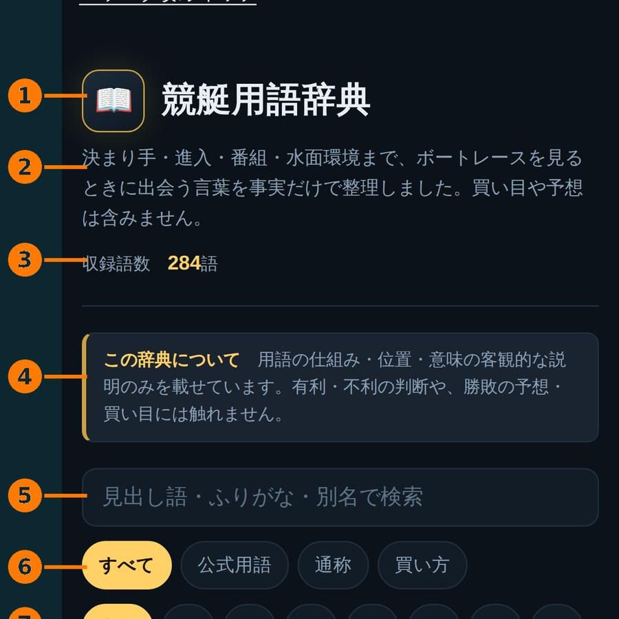
- 題名競艇用語辞典。
- 何が入っているか決まり手・進入・番組・水面のことばです。
- 語の数284語。
- この辞典の立場意味と仕組みの説明だけです。有利か不利かの判断や、予想や買い目には触れません。
- さがす見出し・ふりがな・別の呼び方で調べられます。
- 分け方すべて／公式用語／通称／買い方。
- 五十音行で絞り込めます。
観戦記の中の言葉からも、ここに飛んできます。
更新履歴
どのページの何を変えたかの記録です。新しいものが上にあります。
トップの帯に日付が出ていたら、まだ読んでいない更新があるという意味です。
やらないこと
技術の話ではなく、線引きの話です。
- 買い目を出す
- 当たった率だけを宣伝する（外れも同じ場所に出します）
- 「残りわずか」「あなただけ」のような、あおる言葉
- ランダムな当たり演出
- 連続ログインの記録で通わせる
- 通知で急かす
- 順位を付けられないものにランキングを作る
- 分母のわからない率を出す
- 選手の気持ちを推測して書く
また来てもらう理由は、毎朝きまった時間に新しくなることだけです。それで足りると考えています。
読む人の反射を利用するものは使いません。
舟券の購入は20歳になってから。無理のない範囲で楽しみましょう。
毎朝、レースが始まる前に数字が新しくなります。